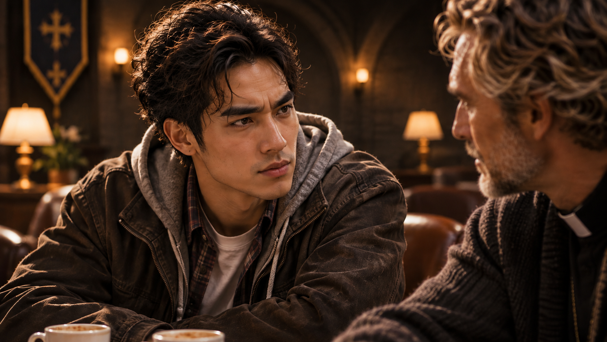
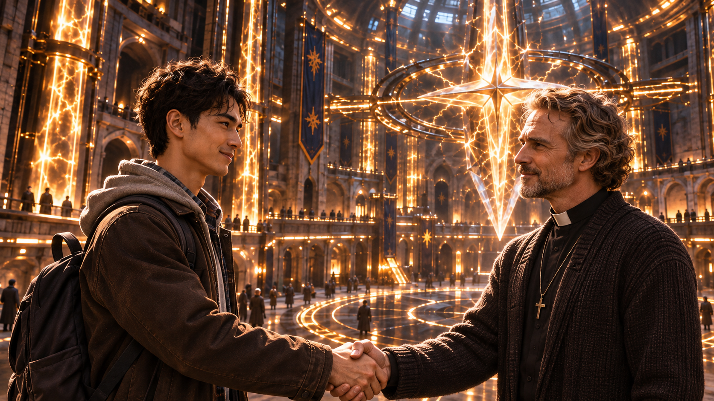

WHITE MAGIC ART STUDIO
後記
來自遠方的客人
美國・猶他州・鹽湖城・東湖地下教會
午後的陽光灑落在鹽湖城郊外一座廢棄的舊變電場上。
這座看似早已荒廢的建築，依舊靜靜佇立在城市的一隅。沒有人會想到，在它的地底深處，竟隱藏著一座聖術師的地下教會。
而此刻，教會的交誼室裡，一場持續了將近整個下午的談話，正逐漸接近尾聲。
桌上擺著兩杯咖啡。
其中一杯早已見底，另一杯卻幾乎沒怎麼動過。
「等一下！」
坐在傑西對面的青年突然挺直身子。
「所以後來呢？」
傑西・約爾森放下咖啡杯。
「什麼後來？」
「撒旦碎片啊！」
青年忍不住向前傾身。
「你剛才說柴克從魔神那裡拿到了碎片，可是還沒告訴我，他最後把那東西藏到哪裡去了。」
「小子。」
傑西壓低聲音。
「你能不能小聲一點？」
青年愣了一下，連忙露出歉意的笑容。
「抱歉、抱歉！我只是太好奇了。」
傑西無奈地搖頭。
「我真不知道自己為什麼會跟你聊這麼多。」
他靠回椅背，望著眼前這名年輕人。
「要不是看在你也是聖術師，而且難得有人對翼聖術師的事情這麼感興趣，我才不會把這些告訴你。」
「我知道。」
「你最好真的知道。」
傑西伸出食指，神情稍微嚴肅起來。
「這些事情不是能隨便拿出去講的，明白嗎？」
「明白，牧師。」
青年認真地點頭。
傑西望著他，終於忍不住笑了。
眼前這名青年約莫二十四歲，穿著簡單的休閒服，腳邊放著一只略顯沉重的背包。
從外表看來，他與一般的大學生並沒有太大差別。
只是那雙深棕色的眼睛，總讓傑西有種說不上來的熟悉感。

他們今天才第一次見面。
然而，從青年踏進東湖教會的那一刻起，傑西便莫名對他產生一份親切感。
不是因為對方特別健談。
而是某種難以解釋的感覺。
彷彿兩人早已認識許久。
也正因如此，傑西才會破例與他分享三年前發生在鹽湖城的那段往事。
從魔神降臨，到安德烈一家如何面對危機。
從柴克第一次接觸聖術世界，到他終於覺醒為真正的雷翼聖術師。
那些原本隨著時間逐漸沉澱的記憶，竟在今天重新變得鮮明。
「好吧。」
傑西重新端起咖啡杯。
「既然都說到這裡了，我就把最後的事情告訴你。」
青年立刻坐直。
傑西忍不住笑了。
「你還真有精神。」
「因為那可是撒旦碎片耶！」
青年理所當然地回答。
「我怎麼可能不好奇？」
「總之……」
傑西稍微整理思緒。
「後來，柴克認為這個世界上，只有一個地方適合保管那塊碎片。」
青年微微皺眉。
「哪裡？」
傑西看著他。
「寇德薩拉。」
青年怔住。
「等等……你說的是那個存放聖物的寇德薩拉？」
「沒錯。」
「可是，那不是聖術師最重要的聖地之一嗎？」
「所以我才說，柴克這小子有時候真的很敢想。」
傑西笑著搖頭。
「據說他在做出決定以前，還特地詢問過拉比。」
聽見這個名字，青年臉上的笑容稍稍收斂。
「拉比怎麼說？」
「柴克說祂沒有明確贊成，但也沒有阻止。」
青年若有所思地點頭。
「原來如此……」
「於是，他便帶著克里斯和安娜，再次前往寇德薩拉。」
傑西停頓片刻。
「有趣的是，這一次，他們竟然沒有經歷先前的那些試煉。」
「什麼意思？」
「他們直接穿過聖牆，抵達主殿。」
「直接進去？」
「對。我們猜想，可能是因為三兄妹先前已經通過試煉，所以聖地才允許他們再次進入。」
青年低下頭，似乎正在思索什麼。
傑西繼續說道：
「而且，柴克還在那裡見到了他的老朋友。」
「老朋友？」
「迦勒。」
青年抬起頭。
「就是那位已經成為基路伯的天使？」
「沒錯。」
「那他們應該很高興吧？」
傑西臉上的笑容忽然變得有些微妙。
「這個嘛……」
「怎麼了？」
「如果你以為那是一場溫馨的重逢，可就錯了。」
傑西忍不住笑出聲。
「聽說迦勒一看到柴克帶來的東西，臉色立刻就變了。」
「他非常反對把撒旦碎片藏在寇德薩拉。」
青年挑起眉毛。
「連迦勒都反對？」
「何止反對，他們還吵了一架！」
「真的假的？」
「當然是真的。」
傑西攤開雙手。
「柴克認為，寇德薩拉既然能保管那麼多重要聖物，應該也有能力隔絕撒旦碎片的影響。」
「但迦勒認為，那種東西根本不應該出現在聖地裡。」
青年沉吟片刻。
「這樣聽起來……雙方好像都有道理。」
「是啊。」
傑西點頭。
「最後還是克里斯出面協調。他們討論了很久，迦勒才勉強答應，讓柴克把碎片放進聖地的地窖。」
青年似乎鬆了一口氣。
「那就好。」
「不過……」
傑西忍住笑意。
「迦勒還特別強調了一件事。」
「什麼事？」
傑西挺直身子，刻意模仿對方嚴肅的語氣。
「我可不會替你看守那個骯髒的東西！」
青年先是一愣，隨即忍不住笑了出來。
「哈哈哈！這也太有個性了吧！」
「你看吧！」
傑西也跟著笑了。
「這就是那位忠心天使的堅持。」
交誼室裡響起一陣笑聲。
然而，當笑聲逐漸平息，青年卻忽然開口：
「不過……約爾森牧師。」
「嗯？」
青年微微歪頭，嘴角仍帶著笑意。
「你就這樣把碎片的藏匿地點告訴我……」
他停頓了一下。
「難道不怕我哪天真的跑去把它偷出來嗎？」
祈禱室裡安靜了一瞬。
傑西望著他。
隨即笑了。
「你這小子，還真敢開玩笑。」
他伸出一根手指。
「首先，想進入寇德薩拉，必須有翼聖術師陪同。」
接著，又伸出第二根。
「再來，就算真的進去了，也還有三道試煉等著你。」
「如果心術不正，跑去那裡純粹就是自找麻煩。」
青年沒有立即回答。
只是靜靜望著傑西。
那雙深棕色的眼睛裡，似乎閃過一絲難以察覺的情緒。
傑西原本還想補充什麼，卻突然發現一件奇怪的事。
青年的眼睛，正在改變。
原本深棕色的瞳孔，竟逐漸浮現幽綠色的光芒。
「……等等。」
傑西下意識坐直身子。
那雙眼睛……
他似乎曾經在某些古老的聖術記載裡見過。
「這是……」
傑西皺起眉頭。
「木瞳？」
青年沒有否認。
那抹幽綠色光芒在他的瞳孔深處緩緩流轉，卻沒有任何張揚的聖術波動。
傑西的神情逐漸變得驚訝。
「只有繼承木之力的聖術師，才會擁有這種眼睛。」
他忽然想到什麼。
「你該不會正在讀我的心吧？」
青年怔了一下，連忙笑著擺手。
「不、不用擔心！」
他眨了眨眼睛。
綠色光芒隨即褪去，瞳孔重新恢復成原本的深棕色。
「我的木瞳術，沒辦法直接讀取別人的思想。」
「那你剛才在做什麼？」
青年微微一笑。
「我只能感知對方真正的情緒。」
他稍微停頓。
「也正因為這樣，我能察覺一個人說話時，是否隱瞞了真相。」
傑西望著他。
青年接著說：
「而你今天告訴我的這些事情……」
他的神情逐漸認真起來。
「我沒有感覺到任何欺瞞。」
傑西沉默片刻。
隨即笑著搖頭。
「真是方便的聖術啊。」
「有時候確實很方便。」
「不過，你應該知道，這種能力不能隨便對別人使用吧？」
青年點頭。
「我知道。」
他稍微低下頭。
「抱歉，牧師。沒有事先告訴你。」
傑西擺了擺手。
「算了，至少你願意坦白。」
他重新端起咖啡杯，卻沒有立刻喝下。
「而且，說真的……」
傑西看著眼前的青年。
「今天跟你聊了這麼多，我也很高興。」
青年微微一怔。
「三年前發生的那些事情，雖然現在想起來還是覺得不可思議，但有機會重新整理一次，倒也不錯。」
傑西笑了笑。
「謝謝你願意聽我這個老頭子說故事。」
青年立刻搖頭。
「不。」
他望著傑西，語氣突然變得格外慎重。
「應該是我謝謝你。」
「你今天告訴我的每一件事……」
他停頓片刻。
「對我都有很大的幫助。」
傑西望著他。
那一瞬間，他忽然察覺到，眼前這名青年似乎並不只是單純對翼聖術師感興趣。
他像是在尋找某個答案。
一個對他而言，非常重要的答案。
「小子。」
傑西緩緩開口。
「你該不會……也認識其他翼聖術師吧？」
青年怔了一下。
隨即露出有些微妙的笑容。
「嗯……」
他想了想。
「某種程度上……」
傑西等待著他的回答。
青年卻只是輕輕搖頭。
「不算吧。」
「這是什麼意思？」
「沒什麼。」
青年笑了笑，沒有繼續解釋。
「不過……」
他重新看向傑西。
「如果有機會，我真的很想親自見見柴克。」
「喔？」
「我有很多問題，想當面問他。」
傑西思索片刻。
「那恐怕有點可惜。」
青年微微一怔。
「為什麼？」
「柴克現在不在美國。」
「不在美國？」
「嗯。他叔叔帶著三兄妹去東京了。」
「日本？」
「恩。」
傑西靠回椅背。
「他叔叔的老家發生一點事。」
青年低下頭，若有所思。
傑西看著他。
「不過，我相信你們總有一天會見面的。」
青年抬起頭。
「畢竟，這個世界說大不大，說小也不小。」
傑西笑著說。
青年也跟著笑了。
「希望如此。」
傑西忽然想起什麼。
「對了，你是大四生吧？」
「對。」
青年點頭。
「這學期結束就要畢業了。」
傑西看了看牆上的時鐘。
「那你今天應該還有其他行程吧？」
青年低頭看向手錶。
下一瞬間，猛然睜大眼睛。
「哇！」
他立刻站起身。
「時間竟然這麼晚了！」
傑西忍不住笑了。
「怎麼？聊得太開心，忘記時間了？」
「完全忘記了！」
青年連忙抓起背包。
「我真的該走了，我的學校離猶他州還有一段距離呢。」
「那確實該出發了。」
傑西也跟著站起身。
兩人走出交誼室，沿著走廊朝教會大門走去。
午後的陽光已經開始變得柔和。
遠處傳來幾名聖術師交談的聲音。
青年走到門口，轉身向傑西微微鞠躬。
「今天真的非常謝謝你，牧師。」
「不客氣。」
傑西伸出手。
「希望有機會再見。」
青年也伸出手，與他握了握。

「一定會的。」
傑西望著他。
就在青年準備離開時，忽然想起一件事。
「等等！」
青年停下腳步。
「嗯？」
傑西忍不住笑了。
「我們聊了一整個下午……」
他搖搖頭。
「我竟然還不知道你叫什麼名字。」
青年怔了一下。
隨即笑了。
「啊，對耶！」
他將背包往肩上調整了一下。
「你可以叫我霍爾。」
「霍爾……」
傑西輕聲重複。
他望著青年，忽然問道：
「你應該不是美國人吧？」
青年微微一怔。
隨即露出驚訝的笑容。
「哇喔！約爾森牧師，你的直覺也太準了吧？」
「所以我猜對了？」
「對啊！」
青年笑著回答。
「我還以為自己的美式口音已經練得很不錯了。」
傑西也笑了。
「那你是哪裡人？」
「台灣。」
「原來如此。」
傑西點了點頭。
「難怪我總覺得，你的口音有些不一樣。」
青年笑而不語。
傑西忽然又問：
「那麼，霍爾。」
「嗯？」
「你的中文名字呢？」
青年安靜了一瞬。
他似乎想起了什麼。
那雙深棕色的眼睛裡，閃過一絲難以言喻的情緒。
隨後，他露出一抹淡淡的笑容。
「我的中文名字啊……」
他重新望向傑西。
「梁景皓。」
青年一字一頓地說。
「我叫梁景皓。」
傑西微微一怔。
「梁……景皓？」
青年笑著點頭。
「沒錯。」
他向傑西揮了揮手。
「那麼，牧師。」
「我們有緣再見。」
傑西也抬起手。
「一路平安，霍爾。」
青年轉身離開，穿過通往主堂的走廊。
午後的陽光透過主堂高處那扇巨大的拱形圓窗，斜斜灑落在石板地面上。
他從光影間走過，沿著通往地面的階梯拾級而上。
不久後，舊變電場的大門再次開啟。
青年走入鹽湖城午後的陽光中，稍稍調整肩上的背包，隨即邁開步伐。
他的身影逐漸遠去，最後融入街道。
傑西仍站在地下教會的主堂裡，靜靜望著他離開的方向。
不知為什麼，他始終覺得，今天這場看似偶然的相遇，並不只是一次普通的拜訪。
那個青年身上，似乎藏著某種尚未展露的力量。
還有一份難以言喻的使命感。
「梁景皓……」
傑西輕聲重複那個名字。
隨即微微一笑。
「真是個有趣的孩子。」
他轉身準備走回教會。
卻又忍不住回頭，看了一眼青年離開的方向。
或許有一天，這個年輕人也會成為一位不得了的聖術師。
傑西輕輕搖頭，笑著走回教會。
而遠方的街道上，青年仍繼續向前。
他想起傑西剛才說過的那些故事。
金色雷翼。
撒旦碎片。
寇德薩拉。
還有那位曾經親自詢問拉比，最終選擇承擔使命的少年。
青年微微垂下眼簾。
不知為何，那些他努力逃避、以為早已拋在身後的往事，竟隨著今天的談話，再次浮上心頭。
他沉默了片刻。
隨後，抬起頭，望向遠方。
他不知道自己何時才能見到那位金色雷翼。
但他相信，終有一天，他們會相遇。
或許就在某個意想不到的地方。
或許就在另一場冒險的起點。
午後的風吹過鹽湖城。
一位來自台灣的青年，帶著剛剛聽見的故事，走向屬於自己的未來。